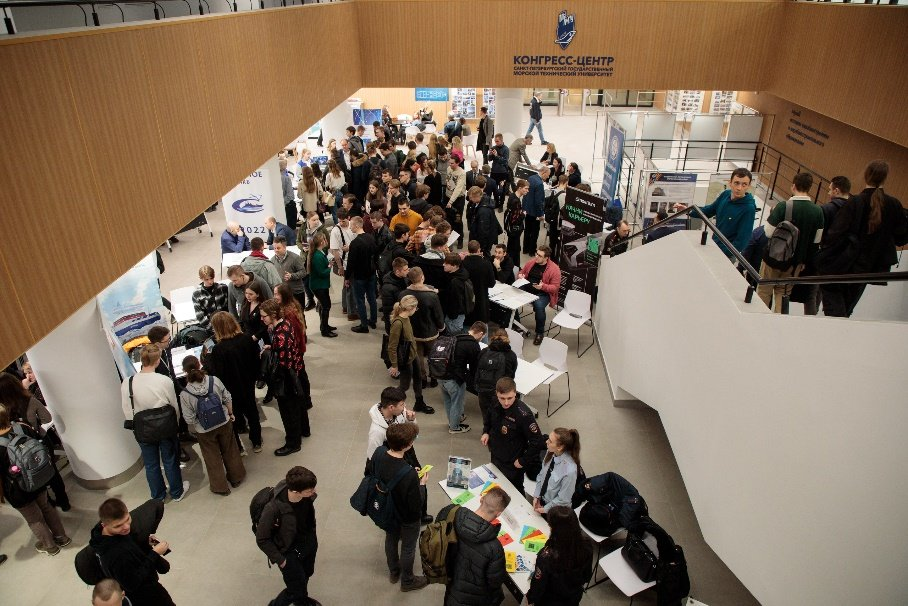
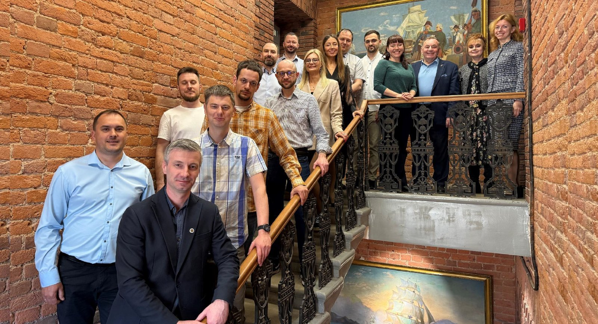

Выпускники СПбГМТУ
Сообщество тех, кто строил, строит и будет строить морскую инженерную школу России. Присоединяйтесь, обновляйте данные и участвуйте в жизни Корабелки.
Я хочу…
Сайт ведёт не по структуре подразделений, а по тому, что можно сделать прямо сейчас. Анкеты открываются на внешних формах Университета.
Присоединиться
Регистрация в сообществе выпускников
02Стать наставником
Менторская программа для студентов
03Выступить перед студентами
Лекция, митап или профориентация
04Предложить практику
Вакансия, стажировка или дипломная задача
05Участвовать в разработках
Научно-технические проекты Университета
06Стать амбассадором
Представлять Корабелку во внешней среде
07Организовать встречу выпуска
Проход, аудитория и экскурсия по кампусу
08Поддержать Университет
Стипендии, лаборатории, целевые проекты
Корабелка и выпускники — взаимно
Как у сильных alumni-сообществ: университет даёт сервисы, выпускники возвращают опыт, кадры и поддержку alma mater.
Оставайтесь в кампусе
Верните опыт в отрасль
Вернуться в знакомые корпуса
Практика и кадры под задачу отрасли
Центр содействия трудоустройству связывает предприятие, студента и выпускника. Предложите стажировку или найдите специалистов Корабелки.
Карьера и практика csto.smtu.ru
Следите за новостями сообщества
Встречи выпусков, лекции и нетконференции анонсируем во «ВКонтакте». Подпишитесь, чтобы не пропустить ближайшие события Корабелки.
Сообщество во ВКонтакте Подробнее
Одна заявка — и вы снова в Корабелке
Бэкенд на этом сайте не нужен: все кнопки ведут на внешние анкеты. Пока ссылка не подключена, заявка уходит письмом в отдел.
Заполнить анкету